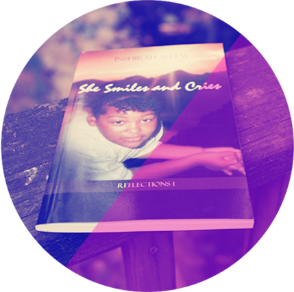

She Smiles and Cries is a memoir about author Inshirah Aleem's severe episode with Bipolar Disorder. Inshirah parallels personal works of poetry with powerful writing to highlight the darkest times of her life. A period of time where she is afflicted with hallucinations, paranoia and a catatonic state that seizes her consciousness.
Author Inshirah Aleem also provides a glimpse into challenges with family dynamics, medical treatment and her teenage peer group. If readers have dealt with a seemingly hopeless circumstance, they will easily relate to her story. Her memoir captures the possibility for us all to rise above pain… to smile after we cry.
Author Inshirah Aleem also provides a glimpse into challenges with family dynamics, medical treatment and her teenage peer group. If readers have dealt with a seemingly hopeless circumstance, they will easily relate to her story. Her memoir captures the possibility for us all to rise above pain… to smile after we cry.